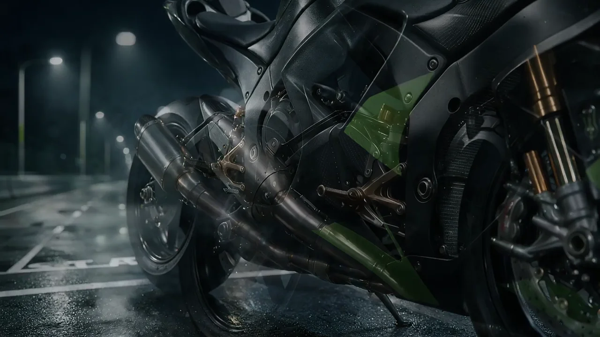
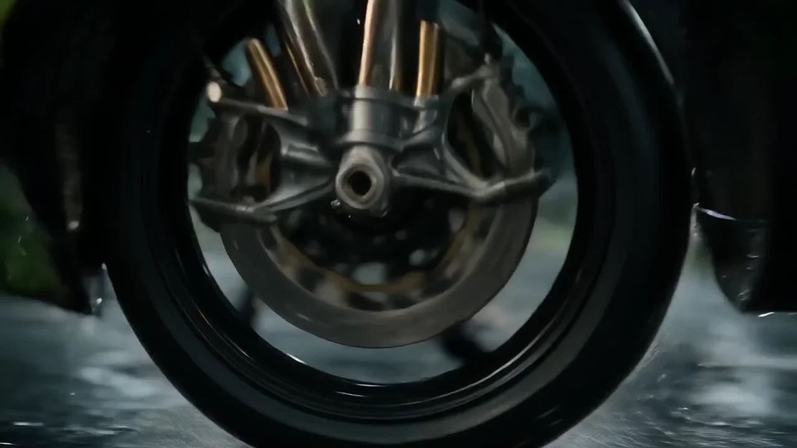
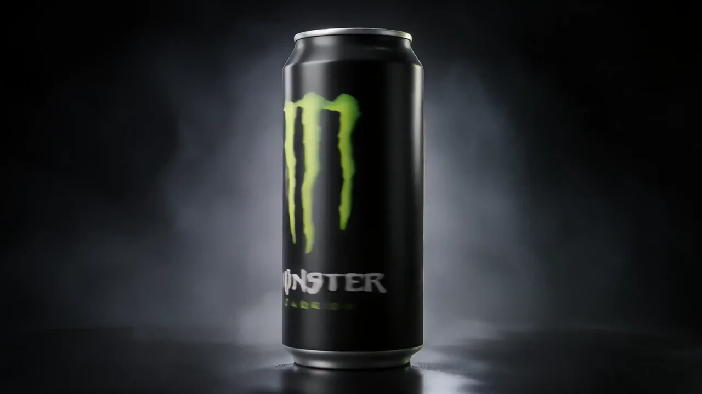

Film
38.2 seconds with the supplied audio track.
Energy drink / AI action film
A speculative energy-drink film that connects a product portrait with a motorcycle ride through rain, reflections and a night-time tunnel.
01 / Concept
The film moves from a can and a rider preparing to set off into a sequence of acceleration, cornering and tunnel shots. It returns to a clean product portrait, connecting the action back to the object that opened the film.
02 / Visual direction
A dark palette, wet surfaces and electric-green accents connect the product and motorcycle imagery. Close details establish anticipation; wider riding shots expand the pace and scale before the final packshot.
03 / Sequence breakdown



Frames extracted from the final film.
04 / Final delivery
38.2 seconds with the supplied audio track.
1920 × 1080 · 16:9. Native proportions preserved in the player.
Embedded final film and three actual frames with a visual sequence breakdown.
Independent speculative portfolio concept featuring Monster Energy branding. Not presented as commissioned work or an official brand campaign.
Next case study: NURA — skincare film
Explore project ↗